|
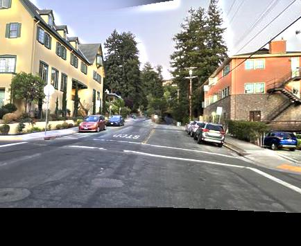
|
Images for rectification
I captured photos of objects with rectangular faces, one being a power outlet in Cory Hall, and another being a print of my artwork. By taking the pictures at an angle, the face which is rectangular at an aerial view, appears as a trapezoid.
|
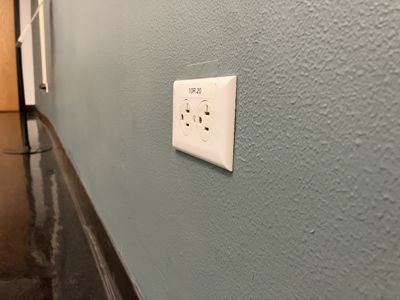
outlet.jpg |
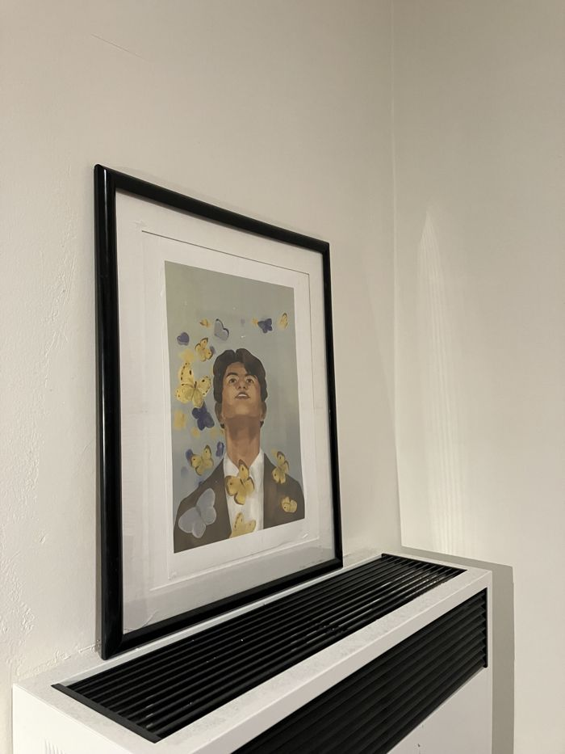
butterflies.jpg |
Images for mosaics
For each scene, I shot multiple photos from different angles by fixing the center of projection (COP) and rotating the camera.
|
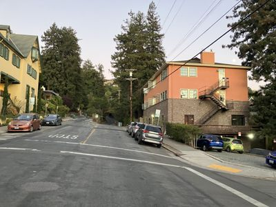
leconte2.jpg |
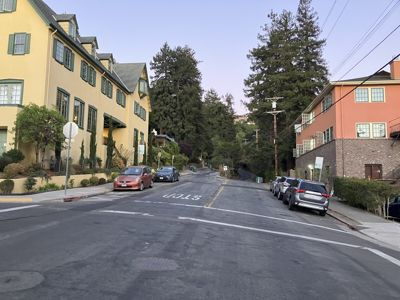
leconte3.jpg |
|
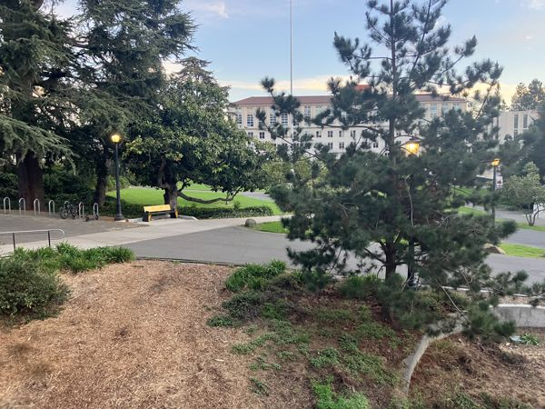
bench0.jpg |
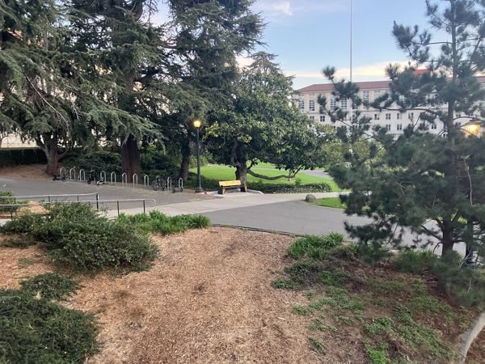
bench1.jpg |
|
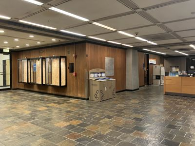
moffitt0.jpg |
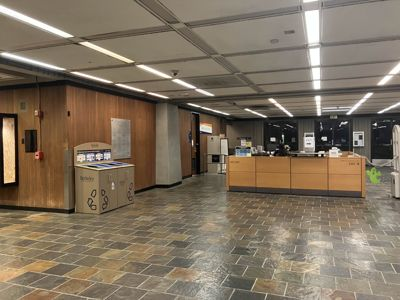
moffitt1.jpg |
Using the images taken, correspondence points were defined using this labeling tool. In two images of the same scene from different angles, these points mark key common regions. The relation between these points is represented by the homography matrix $H$. More generally, a homography is a mapping between any two projective planes with the same COP. Given the correspondence points, the homography is recovered by setting up a system of equations and solving for $H$ via np.linalg.lstsq.
Suppose we have points $\vec{p}_i$ in im1 and $\vec{q}_i$ in im2.
$$\vec{p}_i = \begin{bmatrix} p_{xi} \\ p_{yi} \end{bmatrix} \quad \vec{q}_i = \begin{bmatrix} w \cdot q_{xi} \\ w \cdot q_{yi} \end{bmatrix}$$Because $\vec{p}_i$ and $\vec{q}_i$ are both $2 \times 1$, homogeneous coordinates are added to allow for the affine transformation.
$$\vec{p'}_i = \begin{bmatrix} p_{xi} \\ p_{yi} \\ 1 \end{bmatrix} \quad \vec{q'}_i = \begin{bmatrix} w \cdot q_{xi} \\ w \cdot q_{yi} \\ w \end{bmatrix}$$ $$ H := \begin{bmatrix} a & b & c \\ d & e & f \\ g & h & 1 \end{bmatrix} \quad \text{st} \quad H\vec{p'}_i = \vec{q'}_i$$For each image to be rectified, the target rectangular coordinates were hardcoded. Then, the homography matrix $H$ between the original trapezoidal coordinates and the target coordinates was computed. Given the image and $H$ the function warpImage(im, H) maps the image to the target coordinates through the following process:
- Obtain the coordinates of the four corners of the original image.
- Transform the four corners by $H$, storing the result in warp_corners.
- Given the minimum and maximum coordinates in warp_corners, determine the dimensions of the output image.
- Compute $H^{-1}$
- Use inverse-warping to transform each point in the output image, mapping it to the points in the original image.
- Use scipy.ndimage.map_coordinates to interpolate the color values of the original image to these inverse-warped coordinates.
|
original outlet.jpg |
Initial vertices |
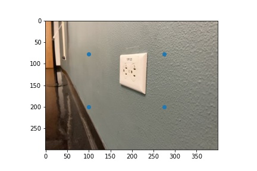
Vertices of the target rectangle |
|
Rectified outlet.jpg cropped to the dimensions of the original image |
|
original butterflies.jpg |
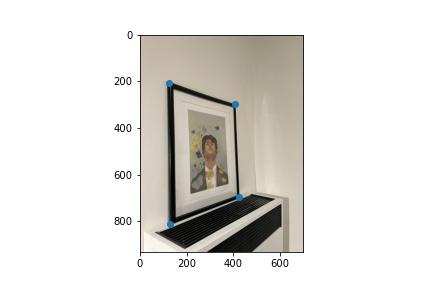
Initial vertices |
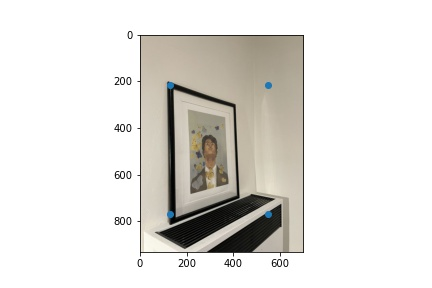
Vertices of the target rectangle |
|
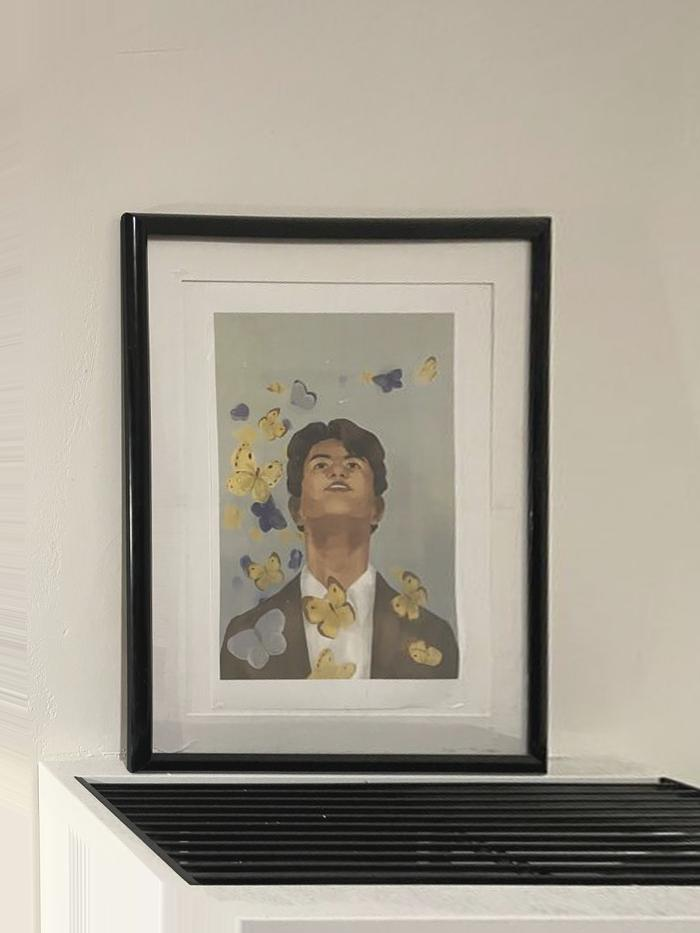
Rectified butterflies.jpg cropped to the dimensions of the original image |
Given a pair of images and correspondence points, one image is selected to be the reference image ref and the other being the image to be warped to_warp. With these defined, the images are then merged into a mosaic through a process similar to rectification.
- Compute $H$ such that it maps the points in to_warp to the points in ref.
- result = warpImage(to_warp, H)
- Because the dimensions of result would likely be different from the initial dimensions, pad result and ref to the same dimensions (the maximum of the two).
- Blend the images together.
 Vertical mask used to blend mosaics $r = 20, \sigma=10$. |
|
leconte2.jpg |
leconte3.jpg |
Blended mosaic |
|
bench0.jpg |
bench1.jpg |
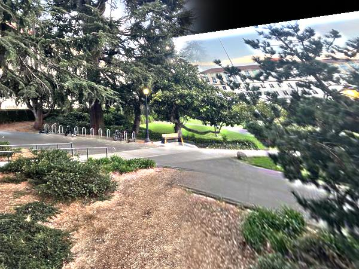
Blended mosaic |
|
moffitt0.jpg |
moffitt1.jpg |
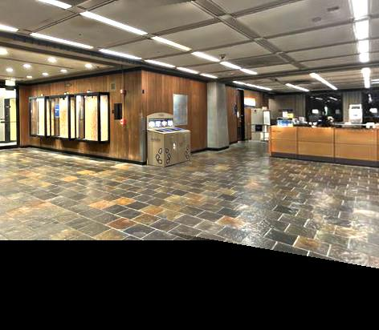
Blended mosaic |
To automate the selection of correspondence points between two images, interest points are first identified in each image. For feature-based image stitching, salient features, such as corners, make useful interest points. A corner is the junction between two edges and can be recognized by looking through a small window; shifting this window in any direction should produce a significant change in intensity. This is the idea behind the Harris corner detection algorithm which is implemented in the function get_harris_corners. This function was used to identify the coordinates of corners in the scene, discarding points along the borders of the image.
Given all of the corners in the images found through Harris corner detection, not all of these would be necessary to use as correspondence points. Therefore, to select the strongest corners, Adaptive Non-Maximal Suppression (ANMS) is applied. To perform ANMS, the function dist2 is used to calculate the pairwise distances of the points. In addition, each point is compared to all other points based on their strengths (found via get_harris_corners). Through this process, we identify the region (represented by the radius from the point) in which a point is the local maximum. Thus, the point with the greatest radius is the global maximum.
After the radii for all points has been computed, the top threshold = 500 points with the greatest radii are kept.